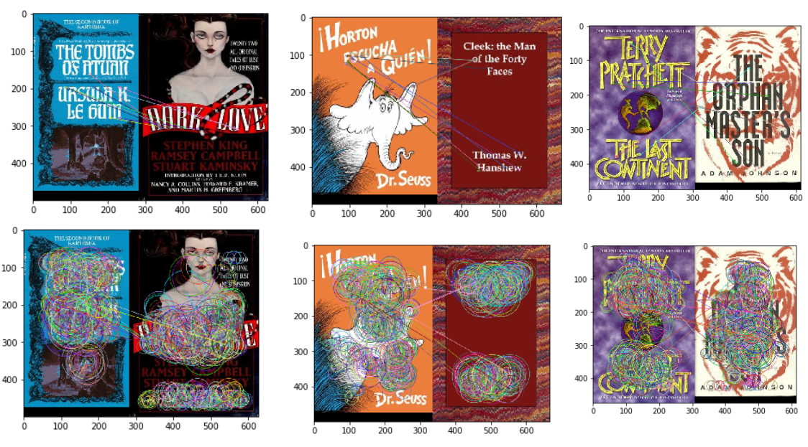
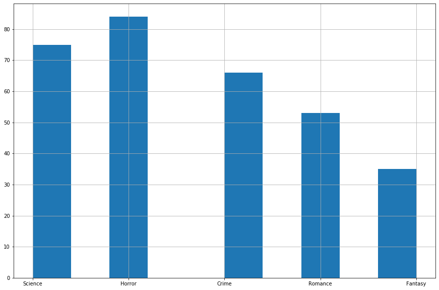

Eric Wang and Jenny Luc
In a survey, 79% of participants agreed that book covers play a decisive role in purchasing a book and 62% of participants believed that book covers are an artistic representation of books. As a result, publishers are always looking to convey information as they can to prospective readers. One type of information that readers can learn from the cover of a book is the genre. For our project, we wanted to apply computer vision techniques to see if we could find any trends or patterns in book covers that could be used to determine the genre of the book.
For our data source, we used Open Library's Subject API. Open Library is an online database that hosts all information related to books. It contains information such as book covers, authors, publishers, etc. Open Library has a Subject API that allows users to directly query any number of books in a certain genre. This way we were able to get 200 books for each genre for a total dataset of 1000 books. The genres we chose were Fantasy, Horror, Romance, Crime, and Science. We chose these genres because we felt that these genres had the most distinct cover designs from each other.
We first started with extracted basic statistics of the book cover images. These features include average saturation, average brightness, average hue, and average entropy. We believed that these features were a good starting point in finding the representation of book cover images as they represent the overall view that humans perceive colors. Once we got these features, we plotted each of them on a histogram by genre to see if we were able to identify any simple trends that may occur from the features. Histograms are a good way in helping us identify if there were any simple, convenient trends that may occur. After we plotted the features against each other on a scatterplot to see if there were any relationships that may form between each feature. Scatter plots are a common practice in identifying correlation or relationships between two features. We later decided to perform dimensional reduction by using UMAP on all the features extracted. This allows us to input as many features as we want and UMAP would reduce the dimensionality and plot it on a graph. If there were any trends or relationships that UMAP was able to identify with the features that we inputted, it would cluster those points together.
When graphing the average brightness of the book covers by genre, we see that there are some similarities among genres like crime and science, where they have a peak at 1.0, and for the other genres, horror, romance, and fantasy, they are similar in which they have peaks at about 0.4 to 0.6, although the horror genre is skewed to the right, and romance and fantasy are slightly skewed to the left.
When calculating the average saturation for each book cover and graphed on the histograms by their genre, we can see that all the genres have a similar curve with their peaks at about 0.3 to 0.5. This shows that there is not much difference in average saturation among the genres.
For calculating the average entropy of all the book covers according to their genre, we can see that they all have a peak at around the same area of 4.5 to 5.5. This shows that the entropy levels for all the genres are about the same, and that calculating entropy would not help in distinguishing its genre based on book covers.
When we graph a scatterplot of average brightness against average saturation, all the plots do not show any relationship between average brightness and average saturation of book covers for all genres.
The graph does not form any visualized clusters based on the features, average brightness, average saturation, average hue, and average entropy. This shows that based on the features, it is not enough to identify and distinguish the genres.
Our next idea was to calculate the RGB histogram for each of the book covers. An RGB histogram captures the number of pixels for each of the 256 intensities for each of the RGB channels. Below is the RGB histogram for the book "The Lion the Witch and the Wardrobe"
Once we calculated the RGB histogram for each of our book covers. We then applied a UMAP clustering algorithm to the collection of RGB histograms to see what clusters formed. As expected, the UMAP algorithm clustered the books with similar color palettes together. However, there were no clusters formed for each genre. This showed that the genre of a book is not an indicator of the book's color scheme. The bottom left chart is the UMAP clustering color coded by the book's genre. The bottom right chart is the same UMAP clustering with the corresponding book cover.
For advanced techniques, we tried using Tesseract OCR which is an optical character recognition engine used to extract text from images. We wanted to extract the text found on book covers to see if we could find any keywords found for each genre. However, we tried various preprocessing techniques like converting the image to grayscale and correcting image skew but were never able to successfully extract a significant portion of the text found on each book cover. As seen below, in the case of "A Brief History of Time" we can see that even when Tesseract was able to draw bounding boxes around some of the words it still missed a significant portion of the text. In the case of "Victims of Crime" it was completely unable to recognize any of the cover text.
The second advanced technique that we tried was a feature detection model called ORB or Orientated Fast and Rotated Brief. ORB was an algorithm developed by Ethan Rublee, Vincent Rabaud, Kurt Konolige and Gary R. Bradski who combined two other popular computer vision algorithms FAST and BRIEF. Efficiently what ORB does is that it finds the key points and descriptions in an image. Key points are clusters of pixels in an image that the algorithm deems hold significance. Below is an example of the key points for the book "Mary Poppins".
Once we calculated the key points and descriptors for each of our book covers. We then took every pair of covers and applied a brute force matcher that compared the Norm Hamming distance between the key points for each image. We then took the average distance between each pair of covers and kept track of the smallest average distance pair. We called this pair the "Best Match" for a cover. We then checked to see if the "Best Match" pair had the same genre. Below are a few examples of "Best Match" pairs.
Below is a chart counting the number of pairs that shared the same genre. Our method worked best on Science and Horror books but was worse for Crime, Romance and Fantasy.
Afterwards we decided to use Convolutional Neural Network (CNN) which filters or reduces the book cover images down to about 13,000 long feature vectors where each represents a book cover. CNN requires little pre-processing and is commonly used in image recognition and image classification. Because of this, CNN is appropriate for being used on our project. With 13,000 long feature vectors, we utilize UMAP to dimensionally reduce the vectors to be plotted on a graph. If there were any similar patterns or representations in the feature vectors, UMAP would be able to cluster similar plots together on the graph. The graph does not form any visualized clusters based on the features, average brightness, average saturation, average hue, and average entropy. This shows that based on the features, it is not enough to identify and distinguish the genres.


In conclusion, we found no obvious trends found between a book's cover and genre. This suggests to us that covers and genres are mostly unrelated to each other. For future work we want to look into applying more advanced image processing techniques like MSER and merging bounding boxes to better extract text from covers. We want to look further into the relationship of text placements and genre.